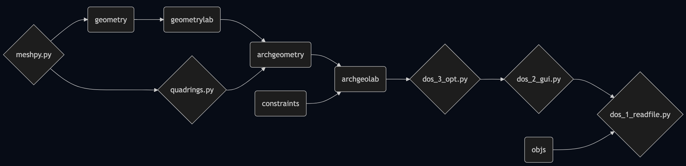

archgeolab
.
├─ geometrylab/
├─ archgeolab/
│ ├─ readfile_orthonet.py
│ ├─ guidedprojection_orthonet.py
│ ├─ opt_gui_orthonet.py
│ ├─ archgeometry/
│ │ ├─ quadrings.py
│ │ ├─ gui_basis.py
│ │ ├─ gridshell_new.py
│ │ ├─ orient.py
│ │ ├─ orthogonalVectors.py
│ │ ├─ curves.py
│ │ └─ conicSection.py
│ └─ constraints/
│ │ ├─ constraints_basis.py
│ │ ├─ constraints_net.py
│ │ ├─ constraints_fairness.py
│ │ ├─ constraints_glide.py
└─ constraints_equilibrium.py
| Files |
Functions |
dos_1_readfile.py |
read .obj files and open GUI window |
dos_2_gui.py |
plottings and algorithms settings between GUI window and optimization |
dos_3_opt.py |
Guided Projection algorithm settings |
archgeometry
| Files |
Functions |
quadrings.py |
superclass on meshpy.py for quad meshes |
gui_basis.py |
superclass on gui.py |
gridshell_new.py |
superclass on gridshell.py |
orient.py |
extract oriented vertex-stars on quadmeshes with even singularities |
orthogonalVectors.py |
frame structures \((e_1, e_2, e_3)\) |
curves.py |
extract mesh polylines |
conicSection.py |
sphere interpolations and packings |
constraints
| Files |
Functions |
constraints_basis.py |
commonly used basic constraints |
constraints_net.py |
commonly used nets constraints |
constraints_fairness.py |
several ways of fairness constraints |
constraints_glide.py |
points gliding andfixing |
constraints_equilibrium.py |
constraints for equilibrium shellstructures |
